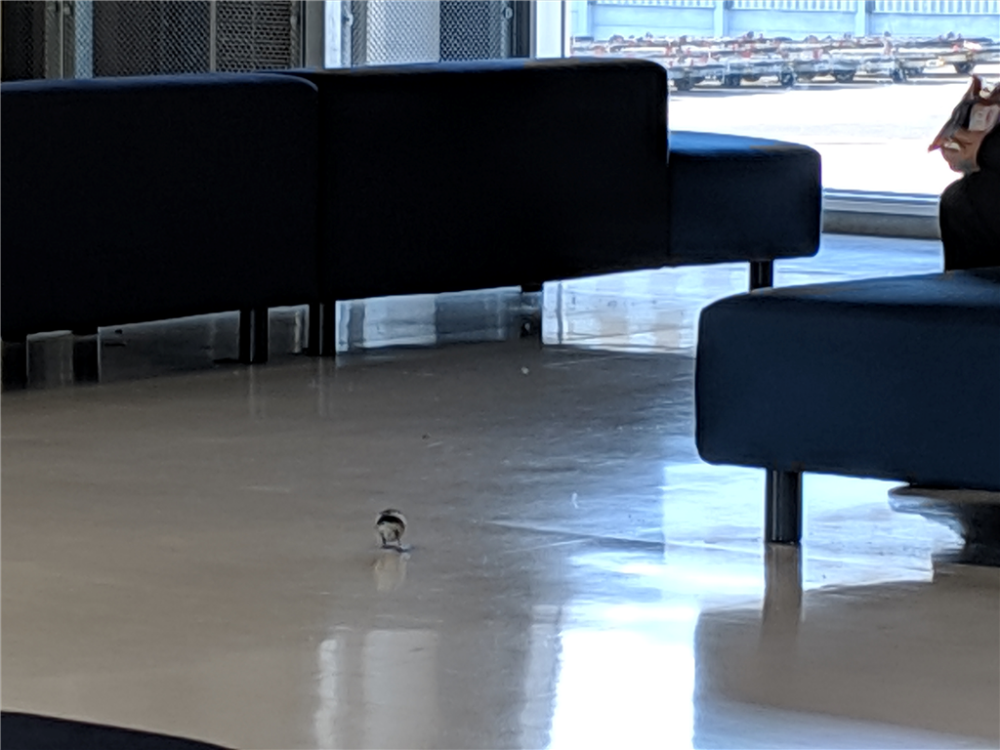
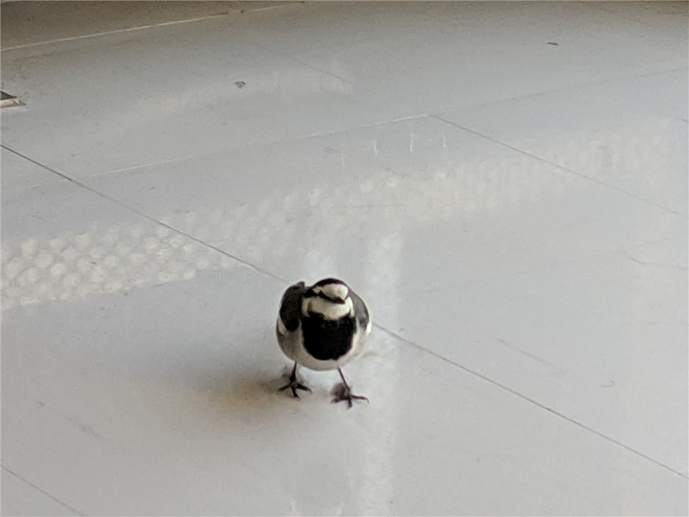

13月4日：松山へ帰る
公開日：
今回の東京滞在はこれにて終わり。松山へ帰る。どのルート（飛行機、船、サンライズ瀬戸などなど）をとるか、多少迷ったけど、ちょうどジェットスターが 5,980 円と安かったので、大晦日の日に抑えておいた。よい時間帯をチョイスしたり、上位プランを追加したりしたため、最終的には 12,000 円ぐらいになったけど、それでもだいぶ安い。
総武快速のグリーン車でゆったり行こうと思っていたのだが、おかんが京成の市川真間まで送ってくれた＆京成に乗れとうるさい。結局、仕方なく京成を使ったのだけれど、JR で行くつもりをしていたのでだいぶ早くついてしまった（JR で行く方が30分ぐらい長くかかるが、お金出せばグリーン車に座れるので楽。京成は特急に有料車両を設けるべき！）。そんなわけで、第3ターミナルでやることもなくゴロゴロしていると、なぜか鳥が歩いている。

漏れ聞くところ、年末からここにご滞在のようだが、ちょろちょろしてかわいらしい。

望遠で撮影してみたけれど、どんな種類の鳥なのかよくわからなかったので、Google レンズに聞いてみた。

どうやらタイリクハクセキレイ？という鳥みたい。Google レンズ、便利だなーと初めて思った。んじゃ、これから搭乗！ ばいばいね！